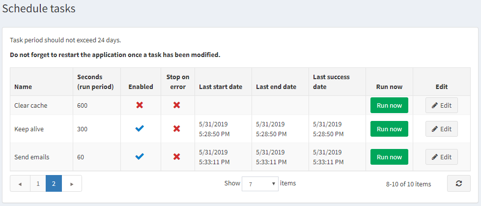
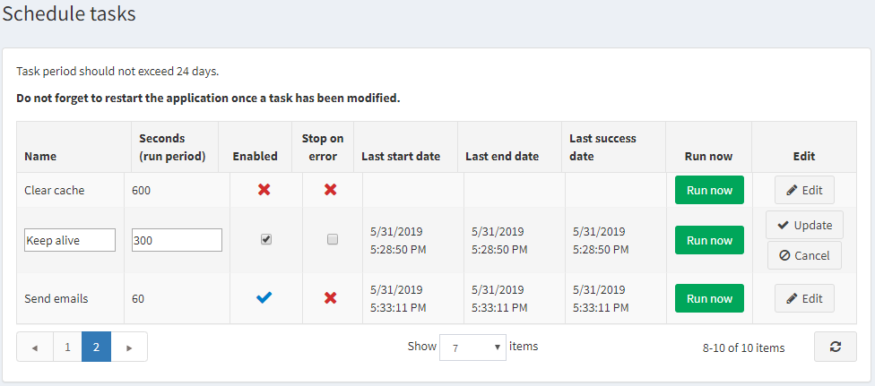

排程任務
排程任務視窗讓商店擁有者可以安排任務在特定週期於背景執行，並檢視關於任務是否有成功完成的相關實用資訊。例如，nopCommerce 會定期傳送佇列中的電子郵件。這些任務會在來自 ASP.NET 執行緒集區（thread pool）的獨立執行緒上執行。
若要檢視排程任務，請在 系統 選單中，選擇 排程任務。系統將會顯示如下的排程任務視窗：

若要編輯排程任務，請點擊任務旁邊的 編輯 按鈕。視窗將會展開如下：

您可以依照下列方式編輯排程任務：
- 編輯 名稱。
- 編輯 秒數（執行週期） 的數值。任務週期不應超過 24 天。
- 勾選 已啟用 核取方塊以啟用該任務。
- 勾選 發生錯誤時停止 核取方塊，以便在發生錯誤時停止該任務。
點擊 更新 以儲存您的變更。
Note
請別忘記在修改任務後重新啟動應用程式。
如有需要，您可以點擊 立即執行 來按需求執行排程任務。